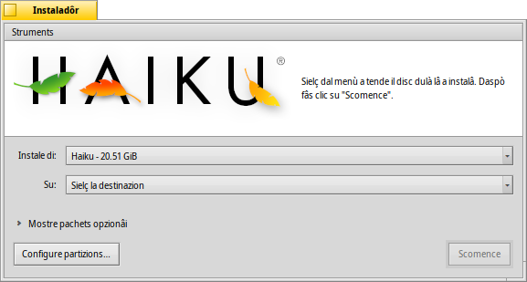

Instaladôr
Instaladôr
| Deskbar: | ||
| Posizion: | /boot/system/apps/Installer | |
| Impostazions: | nissune |
L'instaladôr al ven doprât par copiâ Haiku suntu altri volum.
Cuant che lu si invie, al mostre un barcon di inizi cun informazions impuartantis. No je une EULA cence sens, come che tu sês abituât a viodi e a fâ il clic necessari par parâle vie intun bati di cee, e declare che:
Chest al è software di cualitât beta. Fâs copiis di backup o tu patirâs lis consecuencis!
L'instaladôr al à bisugne di une partizion preparade. Tu puedis doprâ Gjestion disc par creâ e formatâ une partizion, ma ancjemò no ridimensionâ partizions esistentis. Par chest lavôr tu scugnis doprâ un CD Live di GParted o un strument simil, pal moment.
- Haiku al pues jessi zontât a man sul gjestôr di inviament GRUB. La maniere esate par fâlu e je disponibile te vuide in rêt.
Une volte che tu âs acetât cun , ti si presente il barcon principâl:
Tal prin menù a tende tu puedis sielzi la sorzint di instalazion. E pues jessi la instalazion atuâl di Haiku o e pues rivâ di un CD di instalazion o une unitât USB, e vie indenant.
Il secont menù a tende al specifiche la destinazion de instalazion. Cheste partizion/volum di destinazion a vignarà sorescrite dal dut e e à di sei preparade in anticip cuntun strument di partizionament come GParted.
Fasint clic sul piçul widget par pandi Mostre pachets opzionâi, se disponibii, tu podarâs sielzi di instalâ pachets adizionâi al sisteme Haiku di base.
Tu varessis di fâ un ultin control se tu âs sielt la juste destinazion prime di tacâ il procès di instalazion. Fâs clic su par vierzi Gjestion disc e vê une viodude sui nons e la disposizion dai volums e des partizions disponibii.
al tache la procedure di instalazion, che di fonde al copie lis cartelis /home/ e /system/ sul volum di destinazion e lu rint inviabil.
 Struments
Struments
Ae fin de procedure di instalazion, la partizion e ven rindude inviabil in automatic. Dut câs, al pues sucedi che cualchi altri sisteme operatîf o strument di partizionament (par erôr) al sorescrivi il setôr di inviament dal to volum di Haiku. In chest câs, invie il to CD di instalazion e fâs partî l'Instaladôr. Selezione la partizion di inviament di Haiku dal menù e selezione dal menù par rindilu di gnûf inviabil.
L'altri element tal menù al , chest al met un menù tal setôr di inviament cussì di podê sielzi cuâl sisteme operatîf inviâ. Viôt l'argoment BootManager (Gjestôr di inviament) par vê plui informazions.
Nol covente eseguî il Gjestôr di inviament se tu dopris za un gjestôr di inviament come GRUB, in chel câs tu âs di zontâ Haiku a man (viôt parsore) opûr te to machine al zirarà dome Haiku.